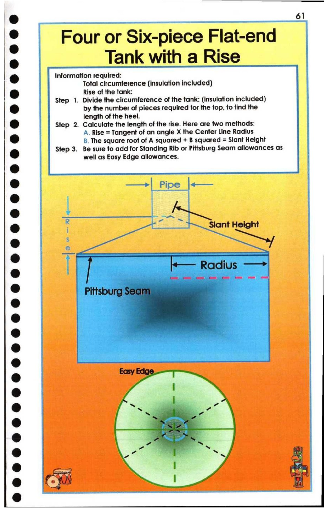

61. Four or Six-piece Flat-end Tank with a Rise

© 61
-e Four or Six-piece Flat-end
le p
s .
° Tank with a Rise
& Information required:
Total circumference (insulation included)
Rise of the tank:
a
Step 1. Divide the circumference of the tank: (insulation included)
© by the number of pieces required for the top, to find the
length of the heel.
® Step 2. Calculate the length of the rise. Here are two methods:
A. Rise = Tangent of an angle X the Center Line Radius
© B. The square root of A squared + B squared = Slant Height
@ Step 3. Be sure to add for Standing Rib or Pittsburg Seam allowances as
well as Easy Edge allowances.
©
@ —--| Pipe |}
—_—
2) R SE as
@ , Slant Height
2) s a4
e
e | ee. .
@
®
®
®
® Eas
@ >
®
a q :
y